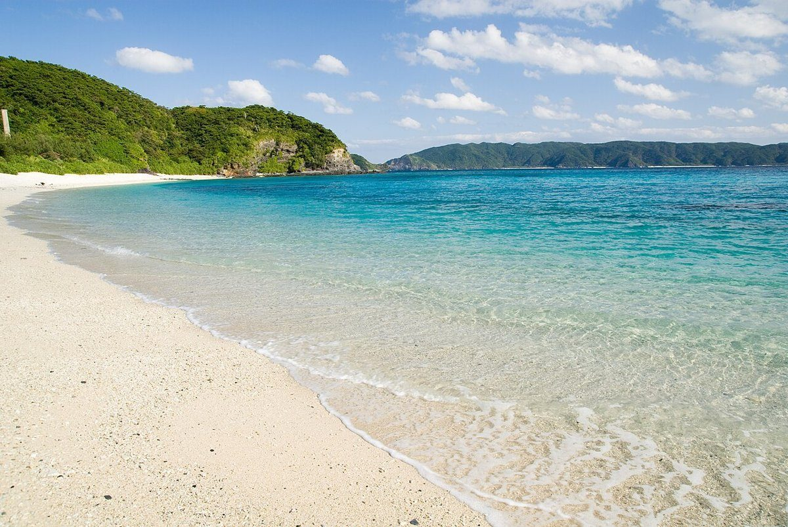
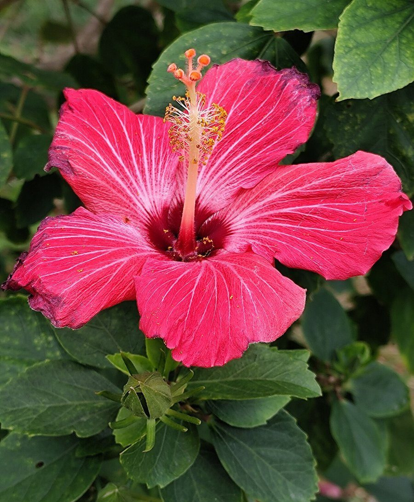
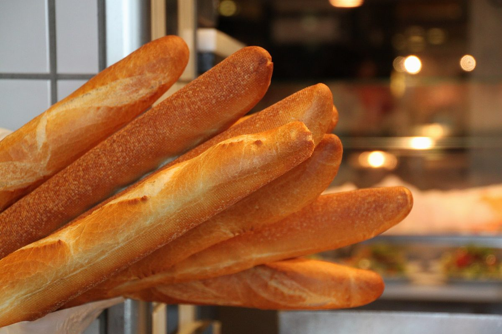
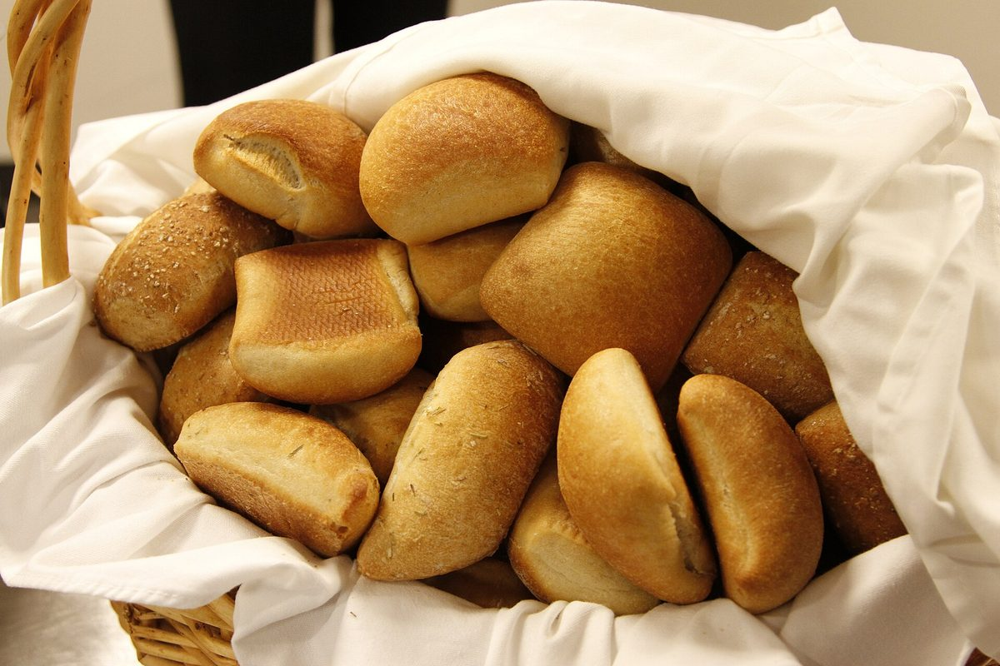

制作側のコンセプト案「海と花と、パンの時間」
沖縄のうるま市石川にあるお店という点から、海の青緑とハイビスカスの赤、パンのきつね色を配色に取り入れました。これは制作側の案であり、お店が掲げる言葉ではありません。
実際のパンの種類や営業の様子は、お店にお問い合わせのうえご確認ください。
パンのある風景(イメージ写真)




横にスクロールできます
ページのご案内
営業時間・商品のご案内は、お電話またはInstagramでご確認ください。
電話 098-880-9678